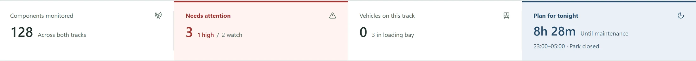
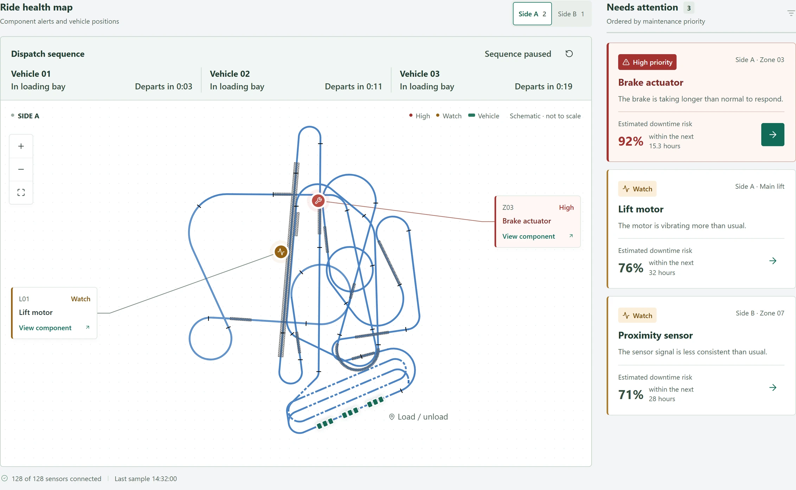
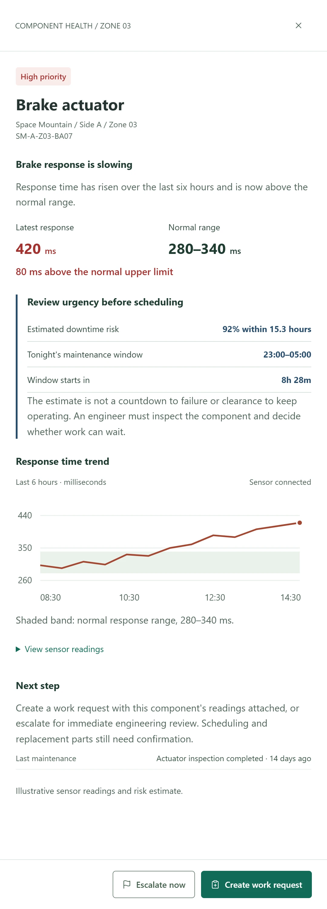

Engineers received alerts after ride problems occurred.
At Space Mountain, an engineer told us the first warning was often an email after a breakdown. The ride’s existing sensors relayed readings to that email system, but coverage was limited, so the email identified only an area of the ride, leaving the engineer to find the faulty component.
While the ride was down, the engineer had to locate the fault and contact the parts team by email. Guests waited through the investigation and repair.
Research
Put component health in the engineer's hands.
I led an on-site interview with an engineer. Their question was practical: could this component wait for the overnight maintenance window, or did it need attention now?
On-site Disney visitEngineer interviewPortable devices2 needs
Check component health
What needs my attention?
AccessCheck status from a tablet or phone without waiting for an email.
LocationConnect the health information to a specific component and ride area.
EvidenceAdditional sensors could provide more specific health context.
Coordinate the response
What needs to happen next?
UrgencyEngineers needed to determine the appropriate response.
PartsRequests went separately to the parts team by email.
OpportunityConnect the component and evidence to the maintenance handoff.
Design challenge
Make the next step clear. Keep the engineer in control.
A sensor reading could flag an issue. An engineer still had to judge its urgency, propose work, and check whether the part would be available.
I kept risk estimates, proposed schedules, and confirmed decisions distinct throughout the workflow.
Design decisions
Four choices shaped the experience.
01
Make status easy to check
Considered
Rely on email notifications to surface component issues.
Chose
A portable overview engineers can check proactively.
02
Connect health to location
Considered
Show health readings separately from the ride map.
Chose
Link each issue to its component and location, with evidence in context.
03
Bring timing into the decision
Considered
Show component condition without maintenance timing.
Chose
Show the next maintenance window and a path to escalate urgent issues.
04
Keep work and parts connected
Considered
Handle work and parts requests in separate email exchanges.
Chose
Carry component evidence into linked work and parts requests.
Before and after
From a breakdown email to an overnight work request.
The proposed workflow starts with a component alert so engineers can plan maintenance before a breakdown.
Before · Workflow observed
React and investigate
01
Ride goes downAn issue interrupts operation during park hours.
02
Engineer receives an emailThe notification identifies the affected ride area, not the exact component.
03
Travel to the rideThe engineer makes their way to the ride location.
04
Investigate the problemIdentify the failed component and determine the work needed.
05
Email the parts teamRequest a replacement through a separate email exchange.
06
Wait for the partThe repair waits on the replacement part.
The ride stays down throughout.
Finding the component and sourcing its replacement both happened during park hours.
After · Proposed experience
Assess, plan, and coordinate
01
Review the alertSee the flagged component, review its health, and assess urgency.
02
Propose the workCarry context into a request for engineering review.
03
Link the partsKeep work, parts and pending decisions connected.
Planned for after park hours.
Coordinate the work and replacement parts for the overnight maintenance window, when the park is closed and guests are not affected by the repair.
The solution
From a brake alert to an overnight repair plan.
The screens below are a 1:1 re-creation of the original pilot. Because of an NDA, they don’t show actual ride data.
Flow 1
Review the alert and assess the issue
In this walkthrough, an alert points to a brake actuator. The engineer locates it on the ride map and compares its response time with the normal range.
The trend and next maintenance window help the engineer decide whether to propose overnight work or escalate immediately.
Story 1: reviewing a brake alert and assessing its health evidence.
Flow 2
Propose the maintenance work
Choosing overnight work opens a request with the actuator, location, and readings already attached. The engineer adds instructions and proposes a maintenance window.
Submitting the request sends the proposal to engineering for review.
Story 2: creating and submitting a work request for proposed overnight maintenance.
Flow 3
Request the part and see what is pending
From the saved work request, the engineer specifies a replacement part, quantity, delivery location, and needed-by time.
The final view keeps the two requests together and shows which decisions still need engineering or parts-team confirmation.
Story 3: submitting a parts request and checking the linked request status.
Behind the design
The details that support an engineer's next decision
At-a-glance context
Put what needs attention beside the next maintenance window
I placed the issue count beside vehicle activity and the next overnight window so engineers could decide where to look first.
Priority labels reinforce the color cues.

A quick overview of ride health, activity, and the next maintenance window.
Location and priority
Connect the alert to its location
An email once pointed only to a ride area. In the proposed design, selecting an alert locates the component on the schematic.

123
1Start with the highest priority
The actuator comes first in the alert list. A priority label and warning icon reinforce the color cue.
2Locate the exact component
The marker locates the actuator on Side A, Zone 03.
3Keep the ride layout readable
The label sits outside the track so it doesn’t obscure the schematic.
The brake actuator's name, zone, and high-priority label connect its alert to the marker on the schematic. Component-level visibility depends on the proposed additional sensors.
Understanding the issue
Give the engineer evidence for the next decision
The drawer puts the latest reading in context before the engineer chooses a response.

12345
Component readings and trends stay beside the ride map, keeping the wider context visible.
1The exact component
The high-priority label, track side, zone, and component ID establish which brake actuator needs review.
2What has changed
A plain-language summary explains that the brake is responding more slowly. The latest reading of 420 ms sits beside the normal 280–340 ms range, with the 80 ms difference called out directly.
3Urgency and the maintenance window
The estimated downtime risk appears alongside tonight's 23:00–05:00 window, bringing condition and timing into the same view.
4The trend behind the alert
The six-hour chart shows how response time has changed. A shaded normal range makes the departure visible, and the sensor readings are available for closer review.
5A choice of next steps
Create a work request with the evidence attached, or escalate for immediate engineering review.
Results
One engineer diagnosed an issue, requested parts, and scheduled a repair within an hour.
Access was limited to one engineer during the pilot, so this result comes from that engineer’s observed visit. The tool was designed for the full 22-person engineering team that would adopt it. In that visit, the engineer caught a developing fault using the ride’s real sensor data, which had previously reached engineers only as email alerts. Under the previous process, investigation began after the ride had stopped, and arranging the same work could take several hours.
Retrospective
The maintenance window gave the readings context.
Putting the reading, location, and maintenance window together helped the engineer judge whether the issue could wait until evening or needed immediate attention.
Working with one engineer meant the risk was designing around one person’s habits. During peak summer season the engineers were stretched thin, and one was all we could get. Next time, I’d push earlier for time with more of them, and test alert urgency and the work-request handoff across shifts before rolling out to the full team of 22.